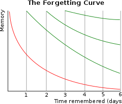

基本 > 记忆机制
* 在开始学习之前，理解如何提高学习效率。
记忆机制
记忆可大致分为短期记忆和长期记忆。
# 短期记忆:
短时间保留的存储器。它可存储电话号码或备忘录内容等临时信息。
# 长期记忆:
可长期保持的记忆。它存储着你希望终生记住的信息，如知识、经验和记忆。
记忆是在大脑各个区域的参与下形成的。其中尤为重要的是海马体和大脑皮层。
海马体:
参与新记忆的形成。通过在海马体中存储经验，我们从短期记忆进入长期记忆。
大脑皮层:
长期保持对过去的记忆。存储在海马体中的信息分布并存储在大脑皮层的各个区域。
可以采用以下方法来促进记忆保持。
重复:
反复复习想要记住的信息可以强化大脑的神经通路，使其更容易保留。

(Hermann Ebbinghaus's 遗忘曲线.)
协理:
将你想要记住的信息与其他信息联系起来，就会形成一个记忆网络，使你更容易回忆起这些信息。
图像:
想象你想要记住的信息有助于你更清晰地记住它。
睡眠:
在睡眠中，大脑能够巩固和组织记忆。充足的睡眠能促进记忆的巩固。
运动:
运动能刺激大脑血流，改善海马体功能。适度运动能有效改善记忆力。
通过有意识地练习这些方法，可以更有效地保持记忆。
我的记忆方法的例子
我将新学的单词与已经记住的单词通过声音联系起来，编一个简短的故事。
当我想起单词时，首先回忆起编的故事，然后再想起故事与单词之间的联系。
也有例外。